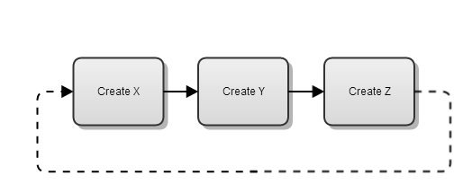
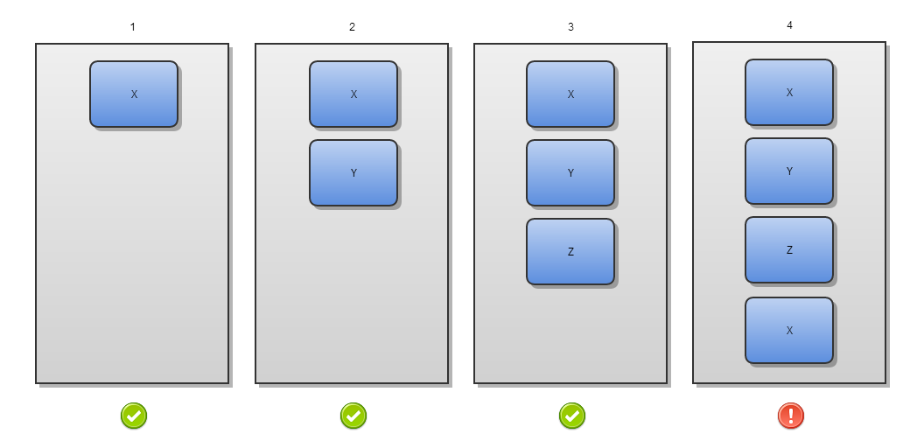
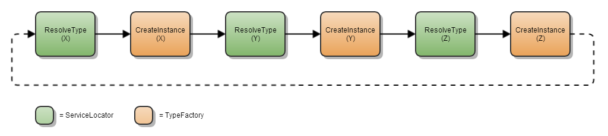
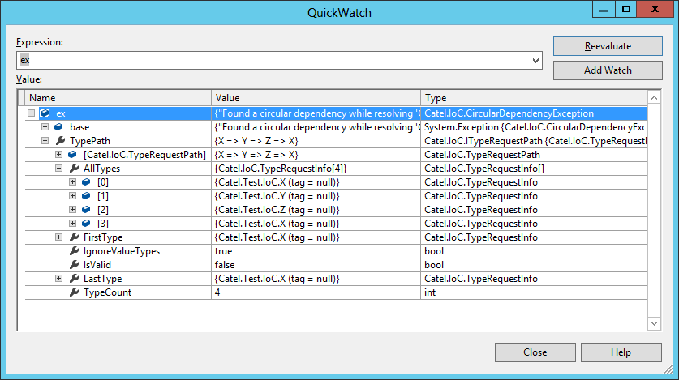

Starting with Catel 3.6, a very useful feature has been added to the ServiceLocator and TypeFactory. This features is called "integrity checker" and will ensure you with useful information about type registration paths. This protection mechanism is very useful in complex applications. When people start building services, sometimes they accidentally inject other services that via injection to other services cause a stack overflow. Debugging and determining which type is causing the issue can be very time-consuming. To make the example a bit more simple, below are a few classes which demonstrate a common issue in enterprises.
public class X
{
public X(Y y) { }
}
public class Y
{
public Y(Z z) { }
}
public class Z
{
public Z(X x) { }
}
Note how a round-trip of dependencies is created which will result in a StackOverflowException somewhere in your code. Below is a graphical example what happens. Note that the dotted line is showing the circular dependency causing the StackOverflowException.

TypeRequestInfo
The first step for the integrity checker is to make sure that it knows what types are being requested from the ServiceLocator (which will be instantiated by the TypeFactory if required). This class contains all the information about a type being created by the TypeFactory:
- Type
- Tag (optional, can be used to differentiate different instances of the same type registration)
TypeRequestPath
Now we have detailed information about the types being constructed, it is very important to keep track of the types which are being created by the TypeFactory. During the construction of a type, the TypeFactory will request the ServiceLocator for a type, which will ask the TypeFactory to construct the type again. Each time the TypeFactory starts constructing a type (and currently has a TypeRequestPath), it will create a new instance of the TypeRequestInfo and add it to the TypeRequestPath. The diagram below shows how the TypeRequestPath will evolve.

Once the TypeRequestPath will contain a duplicate instance of a TypeRequestInfo, it will become invalid (which means there is a circular type dependency).
Note that this is a very simple example, but normally a type will have several services injected which can have dependencies on their own as well which can cause a very complex type request path
Checking the integrity of the type request
To resolve and construct a type, a lot of communication will happen between the TypeFactory and the ServiceLocator. This flow is show in the diagram below.

As you can see, there is a lot of communication between the ServiceLocator and TypeFactory. In the TypeRequestPath example we already saw how the path will become invalid when it contains a duplicate instance of the TypeRequestInfo. The TypeRequestPath will then throw a CircularDependencyException with all the necessary information to solve the issue:

Now you will find the issue in no-time and save yourself a lot of your valuable time!